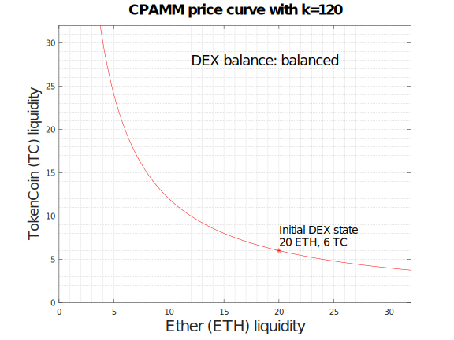

# CS 4970 ### Cryptocurrency <p class='titlep'> </p> <div class="titlesmall"><p> <a href="http://www.cs.virginia.edu/~asb">Aaron Bloomfield</a> (aaron@virginia.edu)<br> <a href="http://github.com/aaronbloomfield/ccc">@github</a> | <a href="index.html">↑</a> | <a href="?print-pdf"><img class="print" width="20" src="../slides/images/print-icon.png" style="top:0px;vertical-align:middle"></a> </p></div> <p class='titlep'> </p> ## Blockchain Applications
# Contents [Decentralized Exchanges (DEXs)](#/dexs) [Decentralized Autonomous Organizations (DAOs)](#/daos)
# Decentralized Exchanges (DEXs)
## Definitions > Liquidity: the efficiency or ease with which an asset or security can be converted into ready cash without affecting its market price. The most liquid asset of all is cash itself. ([ref](https://www.investopedia.com/terms/l/liquidity.asp)) > Liquidity pool: a pool of tokens that are locked by a smart contract ([ref](https://cryptodefinitions.com/dictionary/liquidity-pool/)) ## Order Book Method - To buy: state how much you want to buy at the current market price, and put in an order ("market order") - Possibility an upper limit ("limit order") - Then give your money to the centralized exchange - The exchange tries to pair up your order to buy with somebody who is selling and willing to accept those prices/amounts - Really both are just exchanging commodities - This occurs on a *Centralized Exchange* (CEX) ## Order Book Method <a href='https://upload.wikimedia.org/wikipedia/commons/1/10/Order_Book%2C_depth_of_market.jpg'><img src='https://upload.wikimedia.org/wikipedia/commons/1/10/Order_Book%2C_depth_of_market.jpg' class='right-float-img-nb-400'></a> - Example: [gate.io](https://www.gate.io/) - See the USDT orders for [BTC](https://www.gate.io/trade/BTC_USDT), [ETH](https://www.gate.io/trade/ETH_USDT), and [RVN](https://www.gate.io/trade/RVN_USDT) - The red values are those that are selling {BTC,ETH,RVN} for USDT - The green values are those that are buying {BTC,ETH,RVN} for USDT - Discuss "makers" and "takers" ## Order Book Method - This is what all stock markets use - Disadvantages: - A single centralized authority - Typically takes (relatively) high fees - You have to either wait until somebody agrees to your exchange terms - Or set a low price to sell immediately - Your funds are "locked" up until either the exchange happens or you cancel the order - Very few decentralized exchanges use this <!-- .slide: class="right-float-img-nb-400" --> ## Liquidity Pool <a href='https://finematics.com/liquidity-pools-explained/'><img src='https://finematics.com/wp-content/uploads/2020/07/lp-pools-768x361.png' class='right-float-img-nb-400'></a> - A liquidity pool starts off with a specific ratio of tokens - 50%:50%, for example - The ratio is the *dollar value*, not the number of tokens - One can add to the pool by putting in an equal *value* of each token - One earns fees on your contribution; more later - But how to determine the price? - Most pools use the Constant Product Automated Market Maker method - We'll see the ~~Constant Product~~ Automated Market Maker method first <h2 class="r-fit-text">Automated Market Maker Method (AMM)</h2> - Basic idea: as you buy, from a pool, currency A by selling currency B... - The price of currency A goes up (since there is less in the pool, it must be more in demand) - The price of currency B goes down (since there is more in the pool, it must be less in demand) - To keep the 50:50 price ratio constant... - It has to raise the price of one and lower the price of the other ## AMM Example - Assume we have fETH (fake ETH) at $1 per coin - Assume we have TC (TokenCoin) at $0.1 per coin - The pool has: - 100 fETH valued at `$`100 - 1,000 TC valued at `$`100 - Exchange rate: 1 fETH = 10 TC - Total pool value: `$`200 - 25 fETH are exchanged for 250 TC (both are worth $25) - Minus a (small) fee: perhaps 0.3%; we'll ignore this - The pool now has 75 fETH and 1,250 TC - Exchange rate: 1 fETH = $16\frac{2}{3}$ TC - ... but what is this worth in USD? ## Value in USD - A decentralized exchange only determines the *exchange ratio* between the tokens in its liquidity pool - 1 fETH for 10 TC, for example - This exchange rate may be quite different than that of other exchanges - We'll address this in a bit - The *market value* is how much each is worth in USD - This is determined by external factors, not by the DEX - But we can estimate it... ## Estimated value in USD - The pool now has 75 fETH and 1,250 TC - Assume the USD value of the entire pool remains the same - And each commodity is worth exactly half of that - We are ignoring market fluctuations for now - `$`200 was put in: `$`100 as 100 fETH and `$`100 as 1,000 TC - The pool is still worth `$`200, half to each commodity - The 75 fETH is worth `$`$100/75=$ `$`1.33 in USD - Instead of the initial `$`1 it was worth - The 1,250 TC is worth `$`$100/1,250=$ `$`0.08 in USD - Instead of the initial `$`0.10 it was worth - This only holds if the *exchange rate* doesn't change ## AMM Example - Imagine a pool with a much more liquidity - 100,000 fETH valued at $100,000 - 1,000,000 TC valued at $100,000 - Exchange rate: 1 fETH = 10 TC - Total pool value: `$`200,000 - 25 fETH are exchanged for 250 TC (both are worth $25) - Minus a (small) fee that we'll ignore - The pool now has 99,975 fETH and 1,000,250 TC - Exchange rate: 1 fETH = 10.005 TC - The more liquidity in a pool, the less the price changes with each exchange ## Problem with AMM - Given the initial pool of 100 fETH and 1,000 TC - Exchange rate: 1 fETH = 10 TC - We start with (only) 100 fETH - We buy 990 TC for 99 fETH, as per the exchange rate - We now have 1 fETH and 990 TC - The exchange has 199 fETH and 10 TC - New exchange rate: 199 fETH and 10 TC: 1 fETH $\approx$ 0.05 TC - We then buy our 99 fETH back for $99 \ast 0.05$ TC $= 4.95$ TC - We now have: - Our original 100 fETH - 990 TC - 4.95 TC $\approx$ 985 TC - So clearly this is not viable...
<h2 class="r-fit-text">Constant Product AMM (CPAMM)</h2> - Given $x$ of one commodity and $y$ of another commodity - Invariant: $x \ast y = k$ for some constant $k$ - Initial pool: $x=100$ fETH and $y=1,000$ TC - $x \ast y = 100 \ast 1,000 = 100,000$, so $k=100,000$ - You want to exchange 25 fETH for TC - If you put 25 fETH into the pool, $x$ is now 125 - Invariant is $x \ast y = 100,000$ and now $x=125$ - Determine the value of $y$ to keep this invariant - $y = 100,000 / 125 = 800$ - You get $1,000 - 800 = 200$ TC for your 25 ETH - As the pool had 1,000 TC to start
## Example - Consider an exchange with $k=120$ - Perhaps it was created with 20 fETH and 6 TC - Or 6 fETH and 20 TC - This is too low a liqudity to be viable - But it makes the graphs easy to understand - These examples are all the person *buying* 10 fETH by paying some amount of TC - The DEX's ETH balance decreases by 10 - The DEX's TC balance increases by different amounts

## Same problem with CPAMM? - You exchanged 25 fETH for 200 TC - The pool now has 125 fETH and 800 TC - Exchange it back: - You put 200 TC into the pool - Invariant is $x \ast y = 100,000$ and now $y=1,000$ - Determine the value of $x$ to keep this invariant - Not surprisingly, it's $x=100$ - You get $125-100=25$ fETH for your 200 TC - Minus fees that we'll ignore for now - So you can't abuse it in the same way ## Exchange rates - They are only a snapshot; they change as the currencies are bought or sold - Assume the pool has $x$ of currency A and $y$ of currency B - And let $k = x \ast y$ - $x$ of coin A for $y$ of coin B - Exchange rate: $x/y$ of A for 1 B - $y$ of coin B for $x$ of coin A - Exchange rate: $y/x$ of B for 1 A ## Price Impact - How much does a purchase affect the price (or exchange rate) of the currencies? - Small liquidity pool: a lot - Large liquidity pool: a little
## Arbitrage Trading - What if the price (or exchange ratio) of fETH goes down in one pool? - And other pools have a better exchange rate? - Then somebody is going to trade between the pools - Scenario: DEX A exchange rate: 1 fETH <=> 10 TC - DEX B exchange rate: 1 fETH <=> 20 TC - This is an *arbitrage opportunity* - To make a profit: - Exchange 1 fETH for 20 TC via DEX B - Exchange that 20 TC for 2 fETH via DEX A - This is called *arbitrage trading* - This helps equalize exchange rates between DEXs - And fees are paid for each exchange
## Liquidity Provider - A *Liquidity Provider* is some entity that puts money into a liquidity pool - The fees generated go to the liquidity providers - Your percentage of the fees depends on the percentage of your liquidity in the pool - Some pools are offering APR of 500% - Yes, *five hundred* percent per year - But that seems kinda scammy... - As more people join the pool, your cut is less and less ## Adding liquidity to a pool - Two competing invariants: - $x \ast y = k$ - Ratios are $x/y$ and $y/x$ - Solution: keep the ratio the same, and adjust $k$ - If adding $a$ of the first commodity, add $a \ast y/x$ of the second - This keeps the ratios (and the exchange rate) the same - Then recompute $k$ based on the new $x$ and $y$ values ## Adding liquidity example - Assume the pool has 100 fETH and 1,000 TC - Constant $k=100,000$ - Exchange rate: 1 fETH = 10 TC - So for every 1 fETH we add, we have to add 10 TC - We thus add 10 fETH and 100 TC - Pool now has 110 fETH and 1,100 TC - Exchange rate is still 1 fETH = 10 TC - Compute new constant $k$ - $k = 110 * 1,100 = 121,000$
<h2 class="r-fit-text">What about one token to another?</h2> - What if you wanted to exchange TokenCoin (TC) for some OtherCoin (OC)? - Assume both TC and OC are tokens on a (fake) Ethereum blockchain - Most DEXs only deal with one token and (fake) ETH - But most DEXs will connect to another DEX / liquidity pool - The first exchanges TC for fETH... - ... then sends it to the second, which exchanges the fETH for OC - This is called *Routing*
## Know Your Customer (KYC) - Governments require all entities they can control.... - Coinbase, binance.us (*not* binance.com) - To know their customer - To report on gains for tax issues! - This requires submitting: - Identification (pictures, ID such as a drivers license) - Tax information (social security number, etc.) - And requires formal human approval (behind the scenes)
## Joining a liquidity pool - With a high rate of return, why doesn't everybody partake in a liquidity pool? - Some typical reasons: - Need a lot of liquidity in multiple currencies - Many people don't know about it - Three unique reasons: - Impermanent loss (aka Divergence Loss) - Rug pulls - Bugs ## Impermanent loss - Basic idea: consider how much you would have made if you did not invest in a liquidity pool - If that amount is less than the liquidity pool, then the difference is your *impermanent loss* - Impermanent because it is not permanent until you sell ## Impermanent loss - This happens when one of the commodities changes price differently than the other - Reason: arbitrage traders take *value* out of a liquidity pool when equalizing exchange rates - Or the prices *diverge* -- this is also called *divergence loss* - Analogy: "paper loss" when a stock price goes down - But if you wait, you can reverse that loss *if* the price goes up ## Impermanent loss example - Consider ETH and a stablecoin such as USDT - Let the market rate be 1 ETH = `$`1,000 - And 1 USDT is always `$`1 - We put into our liquidity pool: - 10 ETH = `$`10,000 (so $x=10$) - 10,000 USDT = `$`10,000 (so $y=10,000$) - Total pool value is `$`20,000 - $k = x \ast y = 10 \ast 10,000 = 100,000$ <h2 class="r-fit-text">Impermanent loss example 1, part 1</h2> - Our pool: 10 ETH and 10,000 USDT; $k=100,000$ - Imagine the price of ETH drops to `$`800 - An arbitrage trader buys 2 ETH for `$`800 each from Coinbase - And exchanges it with our DEX for USDT - As per CPAMM, they get 1,667 (rounded) USDT - They paid `$`1,600 for those 2 ETH, so they made `$`67 - Our DEX now has 12 ETH and 8,333 USDT, so $k$ is the same <h2 class="r-fit-text">Impermanent loss example 1, part 2</h2> - Current price of ETH is `$`800 - Our DEX has 12 ETH and 8,333 USDT - Current value: 12 $\ast$ `$`800 + `$`8,333 = `$`17,933 - What if we had not invested in the liquidity pool? - We would have our original 10 ETH plus 10,000 USDT - Value would have been: 10 $\ast$ `$`800 + `$`10,000 = `$`18,000 - That's `$`67 more! - Our impermanent loss was `$`67 <h2 class="r-fit-text">Impermanent loss example 2, part 1</h2> - Our pool: 10 ETH and 10,000 USDT; $k=100,000$ - Imagine the price of ETH rises to `$`1,300 - An arbitrage trader exchanges USDT for 2 ETH from our DEX - As per CPAMM, they pay 2,500 USDT - Our DEX now has 8 ETH and 12,500 USDT, so $k$ is the same - And sells the 2 ETH to Coinbase for `$`2,600 - They made `$`100 profit <h2 class="r-fit-text">Impermanent loss example 2, part 2</h2> - Current price of ETH is `$`1,300 - Our DEX has 8 ETH and 12,500 USDT - Current value: 8 $\ast$ `$`1,300 + `$`12,500 = `$`22,900 - What if we had not invested in the liquidity pool? - We would have our original 10 ETH plus 10,000 USDT - Value would have been: 10 $\ast$ `$`1,300 + `$`10,000 = `$`23,000 - That's `$`100 more! - Our impermanent loss was `$`100 ## Impermanent loss - How much of a loss is this? - The formula is: $loss = \frac{2*\sqrt{price\\_ratio}}{1+price\\_ratio}-1$ - We are skipping the derivation of this, but you can see details of that derivation [here](https://dappgrid.com/what-is-impermanent-loss/) ## Impermanent loss - Caused by arbitrage trading - The arbitrage traders are taking *value* out of the DEX - Impermanent loss increases when the prices of the commodities diverge - With a stablecoin and a volatile coin - More pronounced with two volatile coins that move in different directions - It's not a problem when the two coins grow at the same rate ## Impermanent Loss Insurance - [Bancor](https://home.bancor.network/) offers insurance against impermanent loss - ... unless they might lose money, then [they will pause it](https://web3isgoinggreat.com/?id=defi-insurer-bancor-pauses-their-impermanent-loss-protection-due-to-hostile-market-conditions) - Posting on the right from [Web3 is going just great](https://web3isgoinggreat.com/?id=defi-insurer-bancor-pauses-their-impermanent-loss-protection-due-to-hostile-market-conditions) - Bancor's [June 19, 2022 update about this](https://blog.bancor.network/market-conditions-update-june-19-2022-e5b857b39336) <!-- .slide: class="" --> ## Rug Pulls <a href='https://bitcoinist.com/rug-pull-dont-fooled-ways-detect-someones-scam-you/'><img src='https://bitcoinist.com/wp-content/uploads/2022/02/pull.jpg' class='right-float-img-nb-400'></a> - When the DEX owner runs off with your coins - Recall `selfdestruct(address)` - The parameter passed in gets all the ether that the contract controls - We can easily ensure only the deployer can call it, and have it transfer the TC in the process - In 2021, an estimated 7.7 billion was stolen in rug pulls ([source](https://www.bitchecker.com/en-US/articles/67)) <!-- .slide: class="right-float-img" -->  ## Bugs - This was an NFT auction, not a DEX, but... - [AkuDreams NFT project earns $34 million that its team will never be able to withdraw](https://web3isgoinggreat.com/?id=akudreams-earns-34-million-team-will-never-be-able-to-withdraw) - Also: [Aku Ethereum NFT Launch Ends With $34M Locked in Flawed Smart Contract](https://decrypt.co/98530/aku-ethereum-nft-launch-ends-with-34m-locked-in-flawed-smart-contract) ## Benefits & Drawbacks - Benefits - No KYC, since it's decentralized - Often open source, so anybody can check the code; thus, more trust - Much faster than centralized exchanges; much smaller fee - Drawbacks - No customer support (*maybe* community forums) - Send to the wrong contract address? Tough luck, your cryptocurrency is lost - Have to use a hot storage device -- a wallet connected to the Internet - May have low liquidity - Open source: one could find a vulnerability ## Examples - Uniswap: smart contract exchange between Ethereum and various Ethereum token cryptocurrencies - Bancor: an entire protocol that competes with Uniswap - SushiSwap: operates on many blockchains - But cannot swap between different blockchains - Balancer: allows up to 8 assets in a liquidity pool - Has *very* complicated algorithms to manage this - See a list of various DEXs [here](https://defillama.com/) - And detailed [directions how to use Uniswap](https://beincrypto.com/learn/how-to-use-uniswap/) ## [Uniswap](https://uniswap.org/) <img src='images/logos/uniswap-uni-logo.svg' class='right-float-img-600'> - Version 1 in 2018; v2 in 2020, and v3 in 2021 - V2 had `$`135 *billion* in value - Information about Uniswap is [here](https://uniswap.org/blog/uniswap-v3) - Features: - Slippage prevention - Different risk tiers with different fee rewards - You can see the currency swap web interface [here](https://app.uniswap.org/#/swap?chain=mainnet) ## Sources - Much of the DEX slides were generated after learning about it from [Whiteboard crypto videos](https://www.youtube.com/c/WhiteboardCrypto/videos) - [DEX intro](https://www.youtube.com/watch?v=2tTVJL4bpTU) - [Liquidity pools](https://www.youtube.com/watch?v=dVJzcFDo498) - [Automated Market Makers](https://www.youtube.com/watch?v=1PbZMudPP5E) - [impermanent loss](https://www.youtube.com/watch?v=_m6Mowq3Ptk) - [Rug pulls](https://www.youtube.com/watch?v=YFaqng3YESE)
# Decentralized Autonomous Organizations (DAOs) <img src="images/logos/dai-coin-symbol.svg" class="cclogosubtitle"> <img src="images/logos/eth-coin-symbol.svg" class="cclogosubtitle"> <img src="images/logos/etc-coin-symbol.svg" class="cclogosubtitle"> <img src="images/logos/juno-coin-symbol.svg" class="cclogosubtitle"> <img src="images/logos/mkr-coin-symbol.svg" class="cclogosubtitle">
## DAOs - DAO = Decentralized Autonomous Organization - An organization whose membership and rules are governed by a smart contract - Membership often managed by an ERC-721 (or ERC-1155) NFT - They can instead issue ERC-20 (or ERC-1155) tokens if some members have "more" voting rights than others - They are still in their nascent stage ## DAO generic examples - An organization that allows for voting by its members - Some/all members can propose polls to vote upon - The smart contract hosts the polls and only members can vote - A charity distribution organization - Members donate to the contract, and the funds are disseminated to the charities that the members vote upon - Governance of another cryptocurrency - Often used for stablecoins, which we'll see later - Anything where there is management needed of funds and/or votes <!-- .slide: class="cclogo-slide" --> ## DAO Specific Examples - [DASH](https://www.kraken.com/learn/what-is-dash), a cryptocurrency managed by its members - [](https://coinmarketcap.com/currencies/maker/) [MakerDAO](https://www.kraken.com/learn/what-is-maker-mkr), a software that manages the [](https://coinmarketcap.com/currencies/multi-collateral-dai/) DAI stablecoin - [Augur](https://www.kraken.com/learn/what-is-augur-rep), a prediction market platform - [MolochDAO](https://molochdao.com/), which focuses on funding Ethereum projects See [here](https://deepdao.io/organizations) for a list of some well-known DAOs <!-- .slide: class="right-float-img" --> ## The DAO (styled Ð) - A venture capital investment DAO launched in April 2016; now defunct - Code is open-source (GPL): [DAO.sol](https://github.com/blockchainsllc/DAO/blob/develop/DAO.sol) - That code contains both an interface and a contract in one file - Raised `$`150 million from over 11,000 investors in a month - That was 15% of the value of all the minted ether at that point - A hack in June 2016 drained all the ether from the DAO - Because of how much ETH was in The DAO, it had a serious effect on the entire Ethereum system ## Background: Receiving ether - For a smart contract to receive Ether, it has to have a function enabling it to do so - This is for generic receipt of ether, which is separate from a `payable` function - In earlier versions of Solidity: ``` function () { ... } ``` - In current versions of Solidity (0.8.x): ``` receive() external payable { } ``` - The function doesn't have to *do* anything, but it does need to exist - Otherwise a transfer of ether to the contract will revert
## Recursive Send - Consider some payout code in a smart contract: ``` function withdraw() { msg.sender.call{value:balance[msg.sender]}(""); balance[msg.sender] = 0; } ``` - Let's have our payout recipient be a smart contract - It defines `receive()` (or `fallback()`?) as follows: ``` uint times; // we'll assume it's set to 3 receive() external payable { address v = 0xSmartContractAddress; if ( times-- > 0 ) v.withdraw(); } ``` - This has now withdrawn three times the amount!
## Recursive send: how to fix - Lots of ways to fix this: - Zero the balance *before* the transfer, and save into a separate local variable - Check the return value of the transfer (not guaranteed to fix it, though) - Verify that the ether balance after is what was expected - And so on... - This was specifically addressed in the Ethereum programming guidelines at the time - But was ignored by many programmers - Including those of The DAO ## Background: The DAO splits - The DAO allowed "splits" to create "child" DAOs - Presumably to focus on some specific aspect of venture capital investments - Or to manage one specific investment - Funds would be transferred to the child DAO - That transfer was susceptible to a recursive send attack ## Mitigation - As this attack was happening, The DAO members tried to split The DAO to prevent this - But were unable to get the votes in time - This is a known problem with DAOs: people don't always vote in a timely manner - Or don't vote at all, or lose their account, etc. ## Mitigation - Vitalik Buterin (Ethereum's creator) suggested blacklisting the attacker - A so-called "soft fork" - The attacker pointed out (anonymously) that his/her actions did not violate any laws - The attacker, on the DAO's Slack channel, then bribed miners with 1 million ETH and 100 BTC to not comply with the mitigation - This entire episode (and the bribe) split the community into two about how to respond - And raised lots of philosophical questions ## Mitigation - The final result: - There was a *hard* roll-back (or hard fork) of the blockchain to before this attack - Invalidating all transactions since then - There were a number of bug fixes and mitigation strategies - The DAO got its funds back, and later disbanded - But not everybody agreed with this approach!
<!-- .slide: class="cclogo-slide" --> ## Split - This mitigation led to *two* different Ethereums: - [](https://coinmarketcap.com/currencies/ethereum/) [ETH](https://coinmarketcap.com/currencies/ethereum/), aka "Ethereum", is the result of the hard fork, with The DAO's money restored <br clear='all'> - [](https://coinmarketcap.com/currencies/ethereum-classic/) [ETC](https://coinmarketcap.com/currencies/ethereum-classic/), aka "Ethereum Classic", is the non-rolled-back version <br clear='all'> - The DAO lost all it's money in ETC, which was worth about $8.5M - Presumably the market price of the two after was about equal to the price of ETH before
<!-- .slide: class="right-float-img cclogo-slide" --> ## Hard fork details  - You can see the exploit wallet destination on both [ETH](https://etherscan.io/address/0x304a554a310c7e546dfe434669c62820b7d83490) and [ETC](https://etcblockexplorer.com/address/0x304a554a310C7e546dfe434669C62820b7D83490) - The last common block was [ETH block 1,919,999](https://etherscan.io/block/1919999) and [ETC block 1,919,999](https://etcblockexplorer.com/block/0xa218e2c611f21232d857e3c8cecdcdf1f65f25a4477f98f6f47e4063807f2308) - The next block: - [](https://coinmarketcap.com/currencies/ethereum/) [ETH block 1,920,000](https://etherscan.io/block/1920000) was the "hard fork" - [](https://coinmarketcap.com/currencies/ethereum-classic/) [ETC block 1,920,000](https://etcblockexplorer.com/block/0x94365e3a8c0b35089c1d1195081fe7489b528a84b22199c916180db8b28ade7f) had the old (faulty) DAO code - A very thorough account is [here](https://www.coindesk.com/learn/understanding-the-dao-attack/) <!-- .slide: class="cclogo-slide" --> ## DAO as currency governance - Create a currency or blockchain - And a separate DAO to manage it - Issue token(s) (either ERC-20 or ERC-721) to allow people to vote - Example we'll see in [Stablecoins](stablecoins.html#/colldecen): - [](https://coinmarketcap.com/currencies/multi-collateral-dai/) Dai ([DAI](https://coinmarketcap.com/currencies/multi-collateral-dai/)) is the stablecoin <br clear='all'> - [](https://coinmarketcap.com/currencies/maker/) Maker ([MKR](https://coinmarketcap.com/currencies/maker/)) is the governance token <br clear='all'> ## DAO Governance Attack - Buy enough of a governance token for a DAO (or other DeFi system) - Especially when it's cheap or when its price has crashed - Then manipulate the associated currency / platform - Example: [April 2022 attack against Beanstalk Farms](https://www.theverge.com/2022/4/18/23030754/beanstalk-cryptocurrency-hack-182-million-dao-voting) - Attacker took a `$`1 billion "flash loan" of cryptocurrency - Then bought 67% voting stake - Voted on a change to the system (the DAO allows this) - Transferred assets to his/her own wallet - Net gain: about `$`80 million - Elapsed time of attack: 13 seconds (sic) ## Definitions > Whale: one who owns a large amount of a given cryptocurrency, and whose trades can significantly affect the price > Airdrop: a free distribution of a small amount of a cryptocurrency to (usually many) users, meant as a reward or to generate hype <!-- .slide: class="cclogo-slide" --> ## DAO and governance issues - Consider the [JUNO vote from March 2022](https://web3isgoinggreat.com/?id=juno-community-votes-to-take-community-members-tokens) - A whale manipulated an airdrop to gain a huge amount of [](https://coinmarketcap.com/currencies/juno/) Juno tokens - Over 3 million tokens, worth `$`117 million at the time - This many tokens could be used to manipulate the price by, say, wiping out the liquidity of the DEX - Or to bribe validators (miners) - It was creating fear in the community, and destabilizing JUNO - Proposal: to take away the whale's `$`123 million in JUNO - No simple simple answer, but the vote (barely) succeeded - Many felt that it [set a dangerous precedent](https://twitter.com/ertemann/status/1502255256536821761?s=20&t=sJPPz4-cppsWjjdD1fnwhA) - A DAO can remove your cryptocurrency holdings! - Whether they were gained legitimately or through a attack ## References - [ethereum.org page on DAOs](https://ethereum.org/en/dao/) - [Some well known examples of DAOs](https://geekflare.com/finance/dao-crypto-projects/) - [Vitalik Buterin's blog post about the DAO vulnerability](https://blog.ethereum.org/2016/06/17/critical-update-re-dao-vulnerability/) - [Another description of the attack](https://hackingdistributed.com/2016/06/18/analysis-of-the-dao-exploit/)